Ameixoeira · Lumiar · Lisboa
Cozinha portuguesa, feita na hora.
Uma casa de família que nasceu na antiga Feira Popular de Lisboa e continua a servir bifes, petiscos, marisco e peixe fresco às portas do Lumiar.
Quarta a domingo, 12:00–15:00 e 18:30–22:00
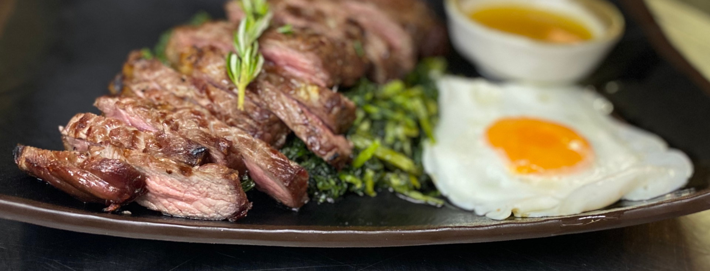
Especialidades
O que os clientes voltam para pedir
Os bifes, o piano, o cozido à portuguesa e a boa garrafeira são os mais recomendados pelos nossos clientes. Há também pratos do dia e peixe fresco todos os dias.
-
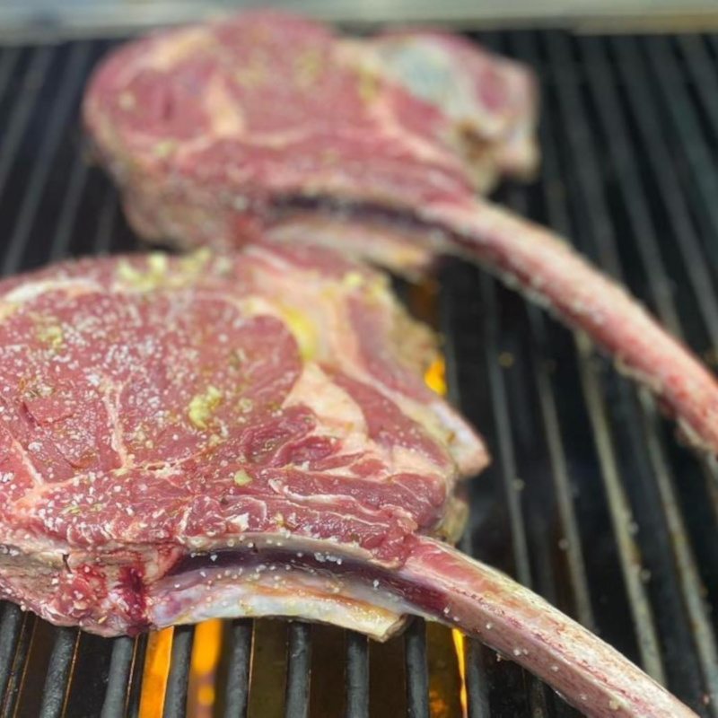
Tomahawk
Com batata frita e arroz de feijão, para 3 pessoas
-
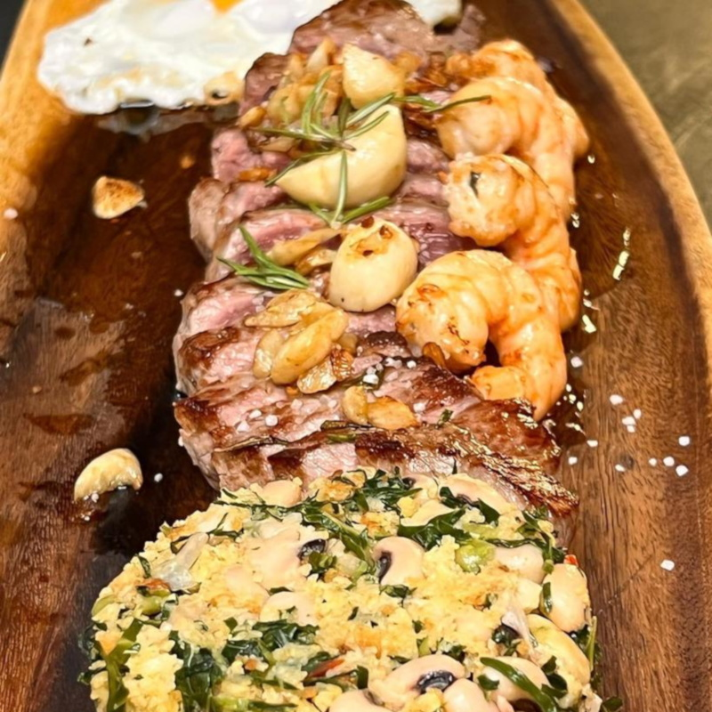
Naco da vazia com gambas
Selado e servido com gambas
-
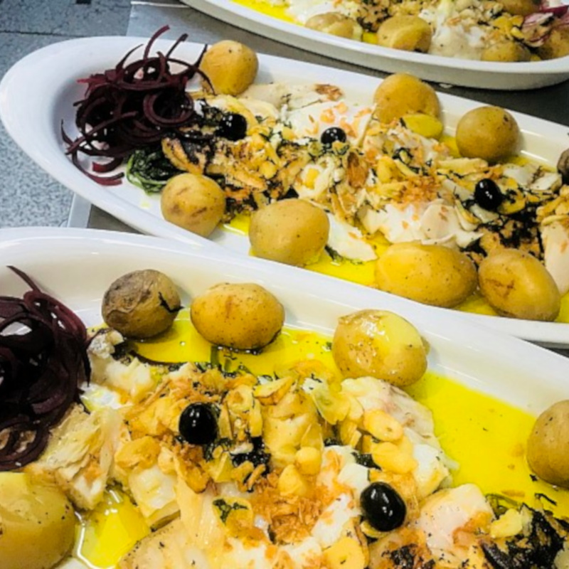
Bacalhau à Casa
Grelos, batata a murro, beterraba e azeite quente, para 2 pessoas
-
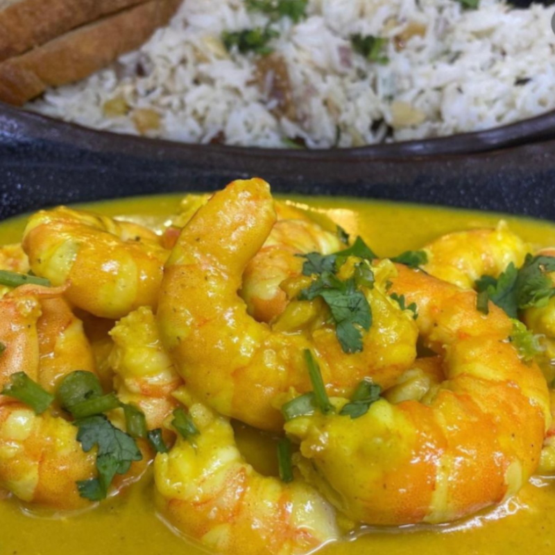
Caril de gambas picante
Com arroz basmati e frutos secos
-
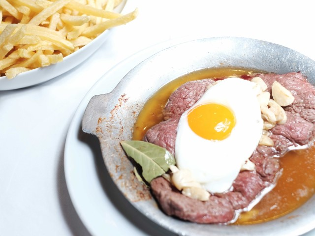
Bifes variados
À Compadres, à pimenta, à café, à Portugal e outros
-
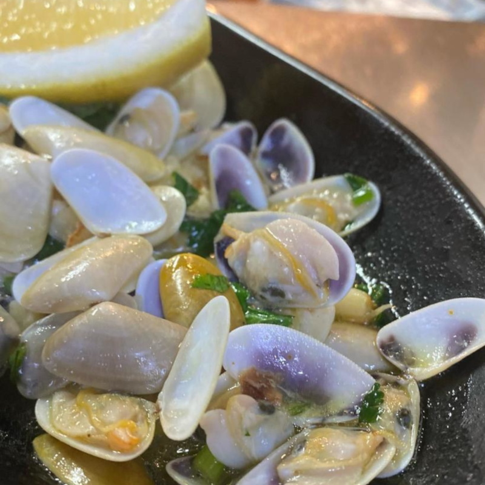
Marisco
Cadelinhas à Bulhão Pato, gambas à casa e canivetes
-
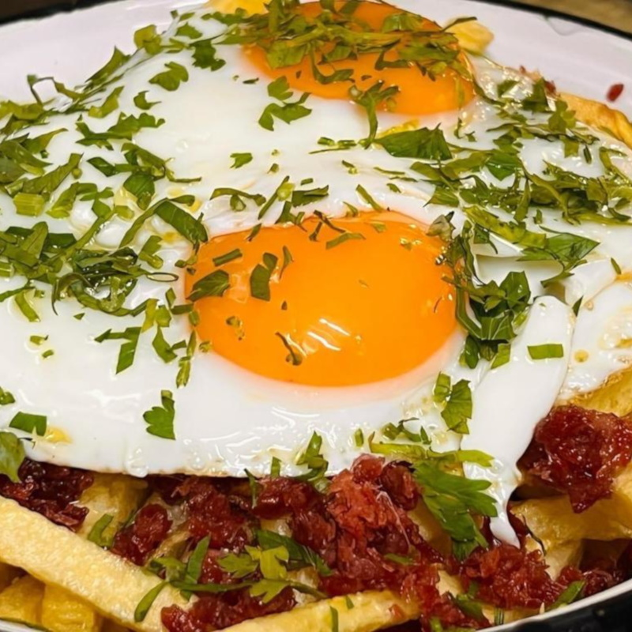
Ovos rotos
Com plumilha de presunto
-
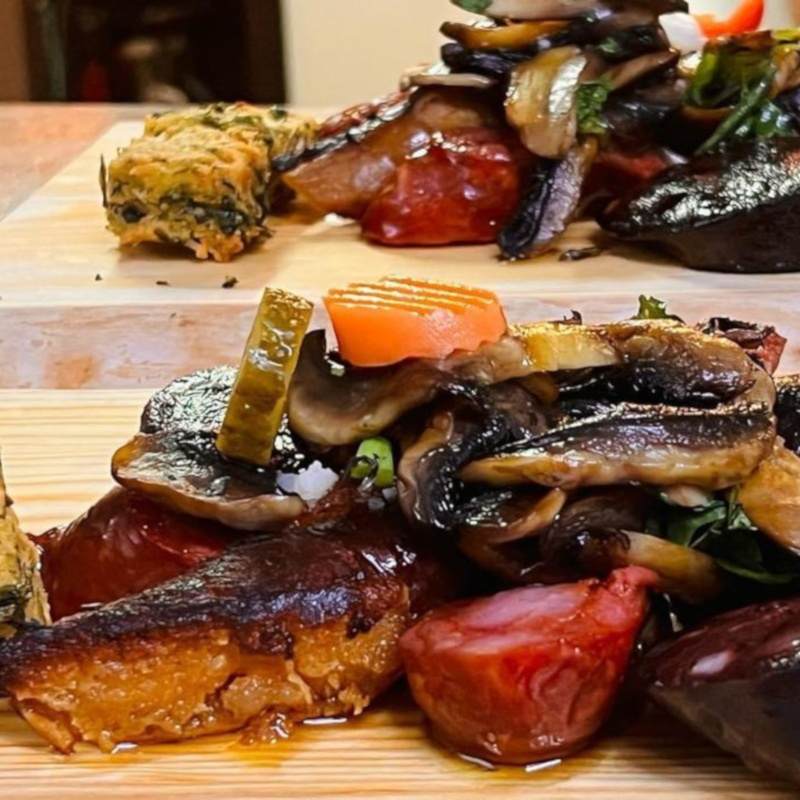
Enchidos salteados
Um petisco para partilhar
-
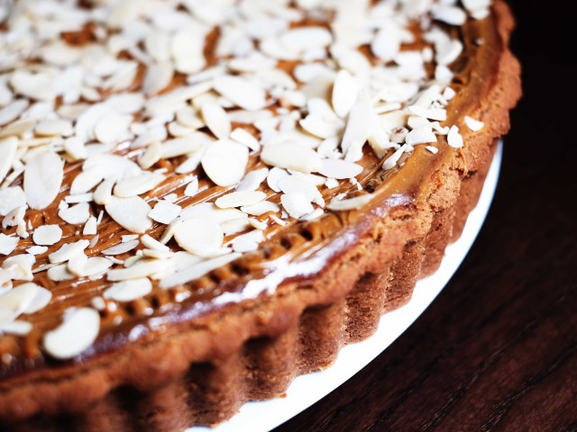
Doces caseiros
Feitos por nós, como a tarte de amêndoa
Ementa
Da entrada à sobremesa
O sommelier da casa
Que vinho escolher?
Diga-nos o que vai comer e sugerimos um vinho da nossa carta.
Escolha uma refeição para ver a nossa sugestão.
Sugestões orientativas. A nossa equipa pode ajudá-lo a escolher à mesa.
Ver a carta de vinhos completaSeja responsável. Beba com moderação.
Reservas e take-away
É só ligar. Tratamos do resto.
Reservas só por telefone
- Almoços
- reserve até às 13h00
- Jantares
- reserve até às 20h00
Take-away encomendas por telefone
- Almoço
- encomende das 10h00 às 12h00
e venha buscar até às 13h00 - Jantar
- encomende das 18h00 às 19h00
e venha buscar até às 20h00
- 963 754 159chamada para rede móvel nacional
- 926 002 649chamada para rede móvel nacional
- 217 545 065chamada para rede fixa nacional
Vem em grupo? Temos menus para grupos, a partir de 15 pessoas. Ligue-nos para saber mais.
A casa
Da Feira Popular para o Lumiar
Os Compadres são uma empresa familiar com origem numa casa mítica da antiga Feira Popular de Lisboa: o Imperador dos Caracóis.
Quando a Feira fechou, a família abriu uma nova casa às portas do Lumiar e a clientela veio atrás. O espírito manteve-se: todos os pratos são confecionados na hora e a simpatia continua a ser aquilo de que os clientes mais falam.
A sala é moderna e espaçosa, ideal para um almoço de família ou um jantar de grupo. Para acompanhar, a carta de vinhos reúne tintos, brancos, rosés e espumantes das regiões mais consagradas, e os doces são feitos por nós.
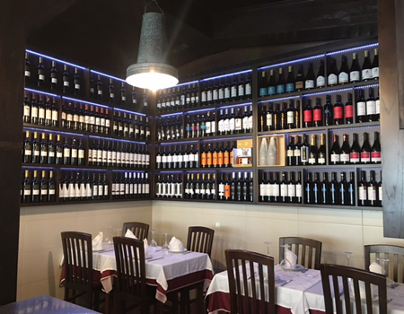
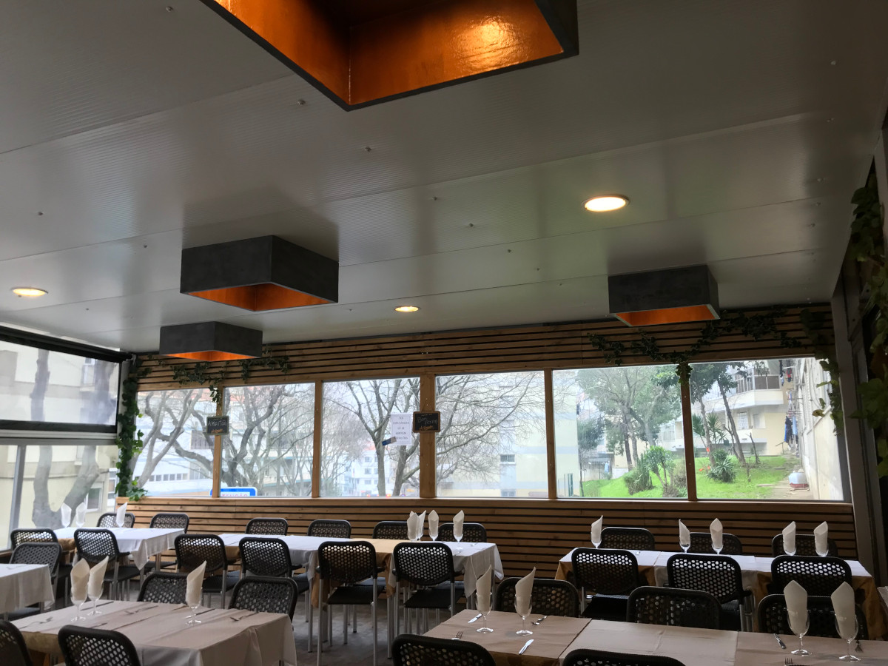
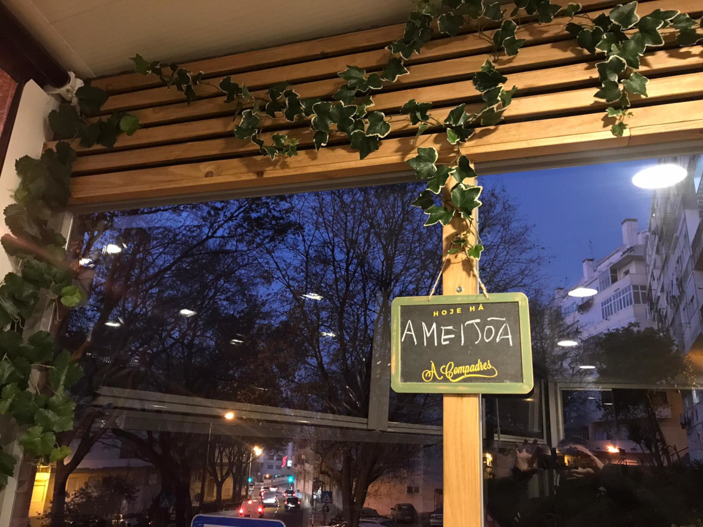
A esplanada é para ficar
Comece o fim de tarde com um prato de caracóis ou marisco fresco e, quem sabe, prolongue-o noite fora. Os Santos Populares e as patuscadas são aqui bem tratados.
- Esplanada
- Bar completo
- Sport TV
- Wi-Fi
- Take-away
Já nos visitou?
Leia o que dizem os nossos clientes ou deixe a sua opinião.
Visite-nos
Estrada do Desvio, 28
Ameixoeira, Lumiar1750-099 Lisboa
Os acessos são fáceis e há estacionamento nas imediações.
Chamada para rede fixa nacional.
Pagamento: dinheiro, Multibanco e cartão de crédito.